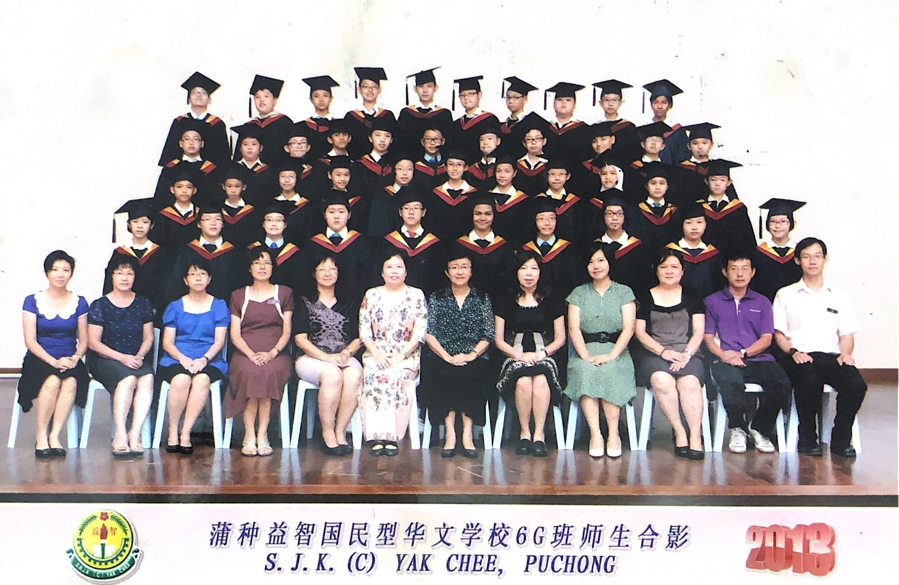
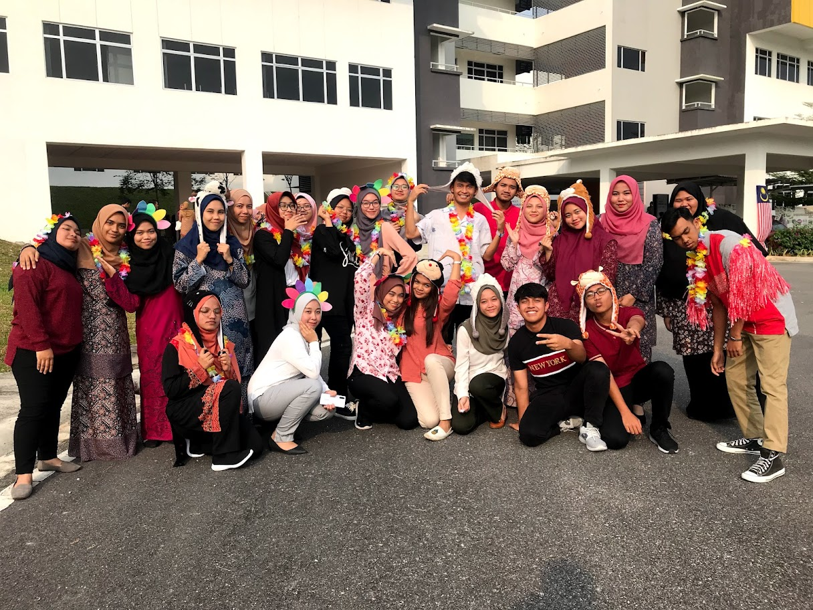

"A simple but powerful reminder of the positive domino effect a good education can have on many aspects of a person’s life and outlook." One of the biggest reasons why education is important is that it helps us become better versions of ourselves.

2006 - 2007
Graduated from Tadika Tanjung Polkadot

2008 - 2013
Graduated from SJK(C) Yak Chee, Puchong

2014 - 2018
Graduated from SMK Batu 8, Jalan Puchong

2019-2022